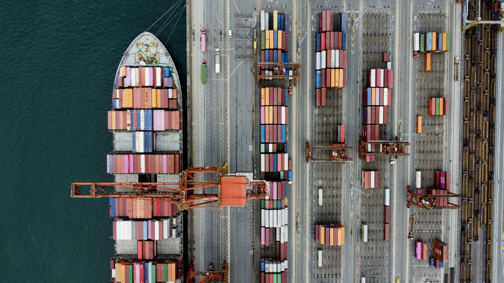

Ship Agency Services
Professional vessel agency support to facilitate smooth port calls and vessel operations.
Ship Agency Services with Hellas
A ship agent acts as the vessel’s local representative in port, handling the formalities, communication and coordination that a port call requires. A well-managed agency reduces delays and keeps owners, operators and charterers informed.
Hellas Logistics & Shipping Agencies supports vessels with attentive coordination from pre-arrival planning to departure and reporting, working with port authorities and local service providers.
Request a QuoteWhat our service includes
- Vessel arrival and departure coordination
Planning and coordination of the vessel’s arrival, stay and sailing. - Port documentation and formalities
Support with the port paperwork and formalities required for the call. - Coordination with port authorities and local service providers
A single point of contact in port for the parties involved. - Vessel clearance and operational assistance
Assistance with clearance and the vessel’s operational needs during the call. - Owners’ and charterers’ agency coordination
Agency support for the party appointing us, with clear communication to all sides. - Port call communication and reporting
Regular updates and reporting so you know where things stand.
Owners’ agency or charterers’ agency?
The role of the agent depends on who appoints it. An owners’ agent looks after the interests of the shipowner or manager during the call. A charterers’ agent is appointed by the charterer and focuses on cargo-related requirements. We coordinate for both, with clear communication to all involved parties.

Who this service is for
- Shipowners and ship managers
- Charterers and operators
- Cargo interests needing local vessel representation
Details that help us respond faster
- Vessel name and IMO number
- Expected date and time of arrival
- Port and berth or terminal, if known
- Purpose of the call (cargo operation, bunkering, crew change, repairs, etc.)
- Whether we are appointed by the owners or the charterers
- Any special requirements for the call
Simple, clear and well coordinated
Send your port call details
Share the vessel particulars, ETA and purpose of the call.
Pre-arrival coordination
We coordinate formalities and arrangements ahead of arrival.
During the port stay
We assist with clearance and local coordination while the vessel is in port.
Departure and reporting
We support sailing formalities and keep you updated through to completion.
Frequently asked questions
What does a ship agent do?
A ship agent represents the vessel in port. This includes coordinating arrival and departure, handling port formalities, liaising with authorities and service providers and reporting back to the owners, managers or charterers.
What information do you need to handle a port call?
Vessel name and IMO number, ETA, the port, the purpose of the call and who is appointing the agency. We confirm anything else needed once we have the basics.
Can you support both owners and charterers?
Yes. We coordinate owners’ and charterers’ agency requirements and keep all parties informed.
Which ports do you cover?
Please contact us with your port and requirements. We will confirm the arrangements available for your call.